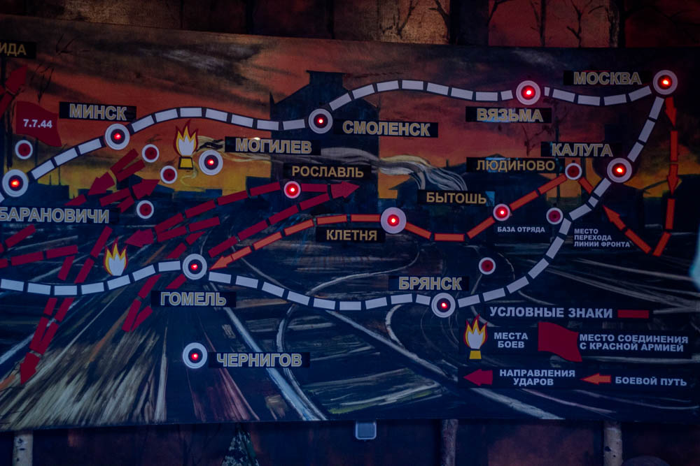

На плане показаны объекты музея. Наведите курсор на миниатюры, чтобы подсветить, и нажмите на миниатюру — откроется изображение и описание.
Участник: ученик СШ№12 — виртуальный квест по экспонатам музея СШ№22